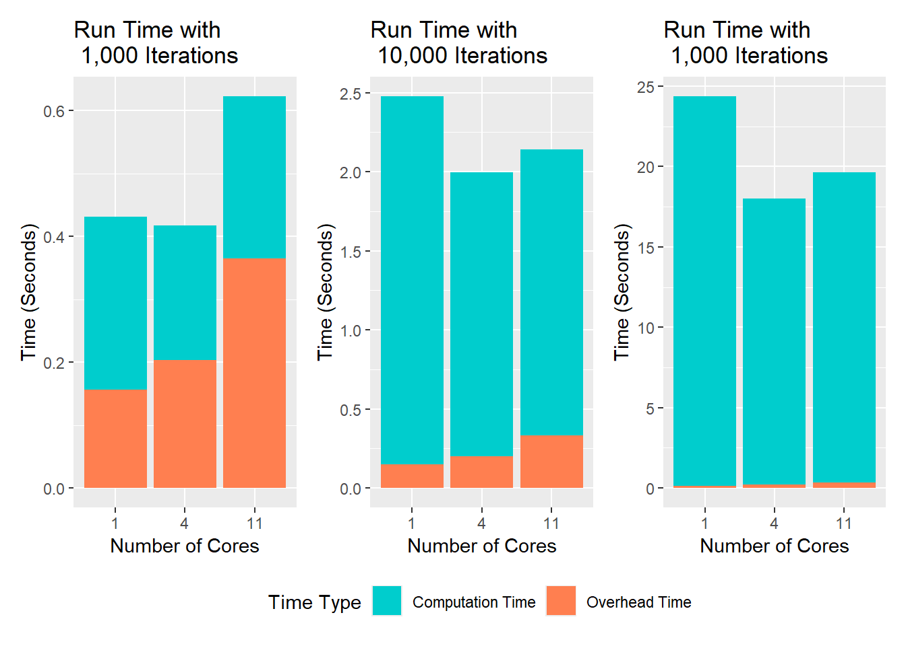

Code
library(parallel)
detectCores()[1] 12Suppose we have a series of functions to run, \(f_1\), \(f_2\), and \(f_3\).
Serial processing: Run \(f_1\) until it completes, and until \(f_1\) is finished, nothing else can run. Once \(f_1\) completes, \(f_2\) begins, and the process repeats.
Parallel processing: All \(f_i\) functions start simultaneously and run to completion.
A problem can range from “inherently serial” to “perfectly parallel” (or “embarrassingly parallel”).
Inherently serial: A problem that cannot be parallelized at all.
Perfectly parallel: There is absolutely no dependency between iterations, and all functions can start simultaneously.
HPC: High performance computing. Implies a program that is too large, or takes too long, to reasonably run on a desktop computer.1
Core: A general term for either a single processor on your own computer or a single machine in a cluster.
Cluster: A collection of objects capable of hosting cores, either a network or the collection of cores on your personal computer.
Process: A single version of R (or any program). Each core runs a single process, and a process typically runs a single function.
In AHPC, we can run up to 32 cores per session.
Imagine having 15,000 jobs. Distributing these jobs among 32 friends will take much less time than doing 15,000 jobs alone.
Once one friend (core) finishes the job they’re working on, that friend begins the next job in the list.
There are diminishing returns for adding cores. Giving each friend (core) instructions takes time, and the friend telling you the results takes time, too.
Resource: More info on parallelization efficiency
parallel & foreach PackagesLoad the package in R: library(parallel)
Check the number of cores you have access to with detectCores().
library(parallel)
detectCores()[1] 12Tip: Leave one core free when you’re running a simulation.
n_cores <- detectCores() - 1The doParallel package allows foreach “loops”, similar to for loops.
library(doParallel)Loading required package: foreachLoading required package: iteratorscl <- makeCluster(n_cores)
registerDoParallel()
foreach(i = 1:20) %dopar% {
sqrt(i)
}[[1]]
[1] 1
[[2]]
[1] 1.414214
[[3]]
[1] 1.732051
[[4]]
[1] 2
[[5]]
[1] 2.236068
[[6]]
[1] 2.44949
[[7]]
[1] 2.645751
[[8]]
[1] 2.828427
[[9]]
[1] 3
[[10]]
[1] 3.162278
[[11]]
[1] 3.316625
[[12]]
[1] 3.464102
[[13]]
[1] 3.605551
[[14]]
[1] 3.741657
[[15]]
[1] 3.872983
[[16]]
[1] 4
[[17]]
[1] 4.123106
[[18]]
[1] 4.242641
[[19]]
[1] 4.358899
[[20]]
[1] 4.472136stopCluster(cl)foreachThe test() function does the following:
Creates and registers a new cluster with n_cores CPU cores, and stops the cluster after the computation.
Uses foreach to perform iteration n_iter number of times
Keeps track of the time needed in total, and time needed for each computation
test <- function(n_cores, n_iter){
# Record start time
time_start <- Sys.time()
# Create and register cluster
cl <- makeCluster(n_cores)
registerDoParallel(cl)
# Record this run's computation start time
time_start_processing <- Sys.time()
# Do the processing
results <- foreach(i = 1:n_iter) %dopar% {
i^2
}
# Record this run's computation stop time
time_finish_processing <- Sys.time()
# Stop the cluster
stopCluster(cl)
# Keep track of the end time
time_end <- Sys.time()
# Create report
out <- data.frame(
Cores = n_cores,
Iterations = n_iter,
Total.Time = difftime(time_end, time_start, units = "secs"),
Compute.Time = difftime(time_finish_processing, time_start_processing, units = "secs"))
# Return the report
return(out)
}cores <- c(1, 4, detectCores()-1)
replications <- c(1000, 10000, 100000)
results <- data.frame()
for(n in 1:length(cores)){
for(r in 1:length(replications)){
out1 <- test(cores[n], replications[r])
results <- rbind(results, out1)
}
}
resultslibrary(ggplot2)
library(tidyverse)── Attaching core tidyverse packages ──────────────────────── tidyverse 2.0.0 ──
✔ dplyr 1.1.4 ✔ readr 2.1.5
✔ forcats 1.0.0 ✔ stringr 1.5.1
✔ lubridate 1.9.3 ✔ tibble 3.2.1
✔ purrr 1.0.2 ✔ tidyr 1.3.1
── Conflicts ────────────────────────────────────────── tidyverse_conflicts() ──
✖ purrr::accumulate() masks foreach::accumulate()
✖ dplyr::filter() masks stats::filter()
✖ dplyr::lag() masks stats::lag()
✖ purrr::when() masks foreach::when()
ℹ Use the conflicted package (<http://conflicted.r-lib.org/>) to force all conflicts to become errorslibrary(patchwork)
library(reshape2)
Attaching package: 'reshape2'
The following object is masked from 'package:tidyr':
smithsres.vis <- results |>
mutate("Overhead.Time" = Total.Time - Compute.Time) |>
melt(id.vars = c("Cores", "Iterations"), value.name = "Time") |>
filter(variable != "Total.Time")
res.vis <- res.vis |>
mutate(variable = factor(res.vis$variable, levels = c("Compute.Time", "Overhead.Time")),
Cores = as.factor(res.vis$Cores),
Time = as.numeric(res.vis$Time))
results.vis1000 <- res.vis |>
filter(Iterations == 1000)
runtime1000 <- results.vis1000 |>
ggplot(aes(x = Cores, y = Time)) +
geom_bar(position = "stack", stat = "identity", aes(fill = variable)) +
scale_fill_manual(labels = c("Compute.Time" = "Computation Time",
"Overhead.Time" = "Overhead Time"),
values = c("cyan3", "coral")) +
labs(title = "Run Time with \n 1,000 Iterations",
x = "Number of Cores",
y = "Time (Seconds)",
fill = "Time Type")
results.vis10000 <- res.vis |>
filter(Iterations == 10000)
runtime10000 <- results.vis10000 |>
ggplot(aes(x = Cores, y = Time)) +
geom_bar(position = "stack", stat = "identity", aes(fill = variable)) +
scale_fill_manual(labels = c("Compute.Time" = "Computation Time",
"Overhead.Time" = "Overhead Time"),
values = c("cyan3", "coral")) +
labs(title = "Run Time with \n 10,000 Iterations",
x = "Number of Cores",
y = "Time (Seconds)",
fill = "Time Type")
results.vis100000 <- res.vis |>
filter(Iterations == 100000)
runtime100000 <- results.vis100000 |>
mutate(variable = factor(results.vis100000$variable, levels = c("Compute.Time", "Overhead.Time")),
Cores = as.factor(results.vis100000$Cores),
Time = as.numeric(results.vis100000$Time)) |>
ggplot(aes(x = Cores, y = Time)) +
geom_bar(position = "stack", stat = "identity", aes(fill = variable)) +
scale_fill_manual(labels = c("Compute.Time" = "Computation Time",
"Overhead.Time" = "Overhead Time"),
values = c("cyan3", "coral")) +
labs(title = "Run Time with \n 1,000 Iterations",
x = "Number of Cores",
y = "Time (Seconds)",
fill = "Time Type")
runtime1000 + runtime10000 + runtime100000 +
plot_layout(guides = "collect",
ncol = 3) &
theme(legend.position = "bottom")
Pinnacle Portal: hpc-portal2.hpc.uark.edu
Menu at the top of Pinnacle Portal > Interactive Apps > R-Studio
Choose number of hours (start small)
Choose number of cores (leave blank for all)
“Launch”
Once your job is active, the “My Interactive Sessions” page looks like this:

Clicking “Launch R-Studio” takes you to the interactive session
In Pinnacle Portal, Menu > Jobs > Active Jobs
Active Jobs are sorted alphabetically by queue
Tip 1: Closing R-Studio ends your session.
Tip 2: the read_csv function causes R-Studio to terminate the session. Use read.csv instead.
Menu > Files > Home Directory
I put my files in the Desktop for quick access.

Make new folders using the “New Dir” button.

Upload file(s) using the “Upload” button.

Tip: To upload multiple files, compress the files/folder on your computer and upload a zipped file (.zip)
Tip: For multiple files, compress the files/folder in the GUI (or in Terminal).

In the Files explorer, click on the file, then click the “Download” button.

In this study, we will demonstrate the Type I Error rates for One-Way ANOVA.
Recall, we use One-Way ANOVA to detect group mean differences.
For three groups, the null hypothesis is \(H_0:\mu_1=\mu_2=\mu_3\).
Type I Error is a false positive (rejecting the null hypothesis when the null hypothesis is true).
We (the researchers) determine \(\alpha\), the probability of committing a Type I error (usually .05, sometimes .01 or .001).
In this simulation, we will generate (simulate) 10,000 datasets of three groups with equal means.
We will perform an ANOVA test on each dataset, and record whether the result is significant.
When \(p=.05\), we expect ~500/10,000 significance tests to reject \(H_0\), even though \(H_0\) is true.
When \(p=.01\), we expect ~100/10,000 significance tests to reject \(H_0\).
When \(p=.001\), we expect ~1,000/10,000 significance tests to reject \(H_0\).
Type in the following command in your terminal on Mac (or Powershell on Windows). It will request your university password (“[username]@hpc-portal2.hpc.uark.edu’s password:”). After you provide the password, you should connect to the pinnacle login node.
ssh [username]@hpc-portal2.hpc.uark.edu
mkdir R-in-HPCCOpen a new terminal, type in the following command to upload the R file and job file to the folder R-in-HPCC
scp Sim1-HPCC.R [username]@hpc-portal2.hpc.uark.edu:/home/[username]/R-in-HPCC
scp job.sh [username]@hpc-portal2.hpc.uark.edu:/home/[username]/R-in-HPCCpinnacle-l3:[username]:~/R-in-HPCC$ sbatch job.sh
Submitted batch job 637189pinnacle-l3:[username]:~/R-in-HPCC$ ls Type1-Results/Any Questions?
Thank you!